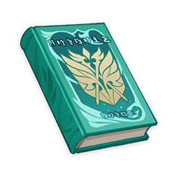

Knights of Favonius Handbook - 5th Edition¶

Note
A code of conduct covering language usage and behavioral norms for Mondstadt's Knights of Favonius, personally edited by Acting Grand Master Jean. All knights are expected to strictly abide by these rules and regulate their words and deeds accordingly.
This handbook is a guide on the core principles of the Knights of Favonius. Knights should carefully read the contents of this handbook and strictly hold themselves to the standards detailed within their life and work, serving the people of Mondstadt as a model Knight of Favonius.
As members of the Knights of Favonius, it is incumbent upon us to be the very embodiment of the three virtues of knighthood: modesty, honesty, and self-control. These are the three pillars of Mondstadt's freedom - remember, freedom cannot exist without the support of duty.
The direct embodiment of these values comes, of course, in one's everyday speech and actions. Hence, this handbook outlines behavioral standards and language usage prescriptions that are intended to cover all potential scenarios that you may encounter in the course of duty.
Section One¶
A knight must exercise vigilance at all times and must never treat any potential threat to Mondstadt lightly. When it comes to your attention that a citizen of Mondstadt in need, you must come to their aid promptly and willingly, for it is the fundamental duty of the Knights of Favonius to be of service to the people of Mondstadt.
Section Two¶
When greeting a traveling merchant from a distant land, pay attention to express proper respect and courtesy. Do not exhibit suspicion or hostility towards them, no matter how suspicious they may seem.
Approved Language:
"Welcome to Mondstadt, strange yet respectable traveler(s)/wayfarer(s)/guest(s)! Please state your identity and intended destination. The Knights of Favonius are here to ensure your safety."
Select the appropriate term of address accordingly.
Prohibited Language:
- "Hey, you! Stop right there! State your identity, you rascal(s)/hooligan(s)/ruffian(s)/outlander(s)/trespasser(s)!"
- "Welcome to the City of Wind and Song, otherworldly traveler(s)/vagrant animal(s)/burgeoning storm(s)."
Note: Refrain from using vulgar or coarse language. It is especially important never to address the guest using pejorative nomenclature, for this is certain to make them feel most unwelcome indeed.
Section Three¶
Never meet members of the public with an attitude of nonchalance or apathy. A responsible knight must always be ready to offer up both sword and sweat for the people's sake. Accordingly, during periods of rest, recreation, or relative inactivity, you must maintain a knightly disposition and be ready to fully re-engage in work matters at a moment's notice.
Approved Language:
- (Musing to oneself while on a break) "I shall check for any previously undiscovered safety issues in Mondstadt - for I, as a knight, have a duty to safeguard Mondstadt at all times."
- (Conversing with city folk at the tavern) "As a knight, I am expected to gain an understanding of people's day-to-day needs and concerns, this knowledge is also indispensable to me in the performance of my duties."
Note: Even when there is no work to be done whatsoever, it is not permissible to take a gratuitous amount of down time at your own discretion.
Prohibited Language:
- (On active guard duty) "Imagine having a lifetime's supply of cider..."
- (While taking a break) "Noeeeelle... Have you got a minute..."
Note: The Acting Grand Master has instructed Noelle to immediately report any work-shy knights who attempt to delegate their existing duties to her. It should go without saying that this behavior is entirely unacceptable. Penalties for violations will take the form of reduced vacation allowance and/or salary deductions. The next time that you consider shirking your duties, you are strongly advised to consider whether the consequences are worth it.
Section Four¶
While the Knights of Favonius respect the important place of wine in Mondstadt's cultural heritage, it is nevertheless expected that knights will exercise due self-control with regard to their alcohol intake. It is not permitted to be drunk while on duty, and it is strictly forbidden to encourage or facilitate the consumption of alcohol by minors.
Note: Knights of Favonius who are not of legal drinking age are forbidden from consuming alcohol. Accordingly, minors must always be accompanied by an adult coworker when entering taverns and other premises where alcohol is served.
Section Five (New)¶
Owing to a recent increase in Fatui activity in the city, knights are reminded that it is forbidden to disclose details of any matters concerning Knights of Favonius operations and strategic deployment to any persons from outside the organization while not on active duty.
Section Six¶
In the event of a major Mondstadt-wide emergency, Knights of Favonius are expected to lead by example and act to safeguard human lives and property. In times of crisis, when people come to you with questions, it is important to answer them clearly and calmly, and to remind them to prioritize their personal safety at all times.
Approved Language:
- "Please, do not worry. The Knights of Favonius will do their utmost to protect Mondstadt!"
- "When danger is imminent, please do not panic. Cover your head with both hands, and crouch down to protect your vital parts. Then, follow the instructions given to you by the Knights of Favonius crew, who will lead you to safety in a swift and orderly fashion."
- (New) "Please rest assured that even though Grand Master Varka is not currently in Mondstadt, the Knights of Favonius are quite well equipped to deal with this crisis in a swift and elegant manner."*
*Only applicable during the Grand Master's absence.
Prohibited Language:
- "Uh-oh, we've never had to deal with a situation like this before..."
- "Even the knights are powerless in the face of a crisis of this magnitude..."
Note: Even in extreme cases where the crisis is indeed of a kind that has not been seen before, it is imperative that you do not appear overwhelmed in front of members of the public, and that you do not do or say anything to call into question the capabilities of the Knights of Favonius.
Section Seven¶
When greeting travelers from afar, please act hospitably by informing them of the locations of essential businesses and services, recommending popular tourist destinations, and giving any further assistance that they may request or require.
Approved Language:
- "If it's your first time here, I recommend visiting Mondstadt's Cathedral."
- "If you're tired, go have some of Mondstadt's famous wine at a tavern called 'Angel's Share.'"
Section Eight¶
Remember to espouse the virtues of modesty and honesty also in your interactions with coworkers and companions. That is to say, be self-effacing in conversation with comrades, and be open and truthful with them. Nurturing and maintaining a sense of camaraderie and solidarity between all our knights is our first line of defense against the enemy.
Approved Language:
"That was wonderful! I've never had a battle experience like that before!"
Note: Avoid exaggerating your speech to the point where you become overbearing. Your words and tone should simply express a sufficient degree of respect and cordiality towards your fellow knights.
Section Nine¶
As guardians of Mondstadt serving as the shield of the Anemo Archon, the Knights of Favonius must set an example for others to follow. Under no circumstances should any knight ever violate the rules and regulations of Mondstadt. If any knight is found to have damaged public property* (or the private property of a citizen of Mondstadt) while not on duty, following a damage assessment, an amount equivalent to the damages caused shall be deducted from the salary and/or bonus of the knight in question. Knights who are minors at the time of the violation, and who therefore do not receive a formal salary, will be penalized with solitary confinement in lieu of a fine, with the period of incarceration to be determined based on the severity of the violation.
*The fish and other aquatic life found in Mondstadt's lakes and rivers are classed as public property, and as such must not be destroyed under any circumstances!
Section Ten¶
Knights of Favonius should always remain vigilant and exercise due caution when dealing with strangers. Even when dealing with non-hostiles, a knight should clarify to the stranger their rights and responsibilities as an outsider, explaining the rules and customs of Mondstadt in a firm but fair manner.
(Amendment 1) Extra scrutiny is required when dealing with visiting diplomats from other nations whose activity gives cause for concern.
Section Eleven¶
In the interests of preventing incidents involving wind glider users, Knights of Favonius should also pay close attention to aerial activity in the region. Knights are required to perform spot-checks on users of wind gliders and ensure that the details therein are current and valid. Should you observe any illegal aerial activity with the city, you should shout to the offender at the top of your voice, imploring them to cease gliding immediately. Should they persist, you should take such further action as is necessary to deescalate the situation.
Note: Even if the airborne offender is an off-duty member of the Knights of Favonius, this is no cause for leniency. You have full authority to revoke the offending party's gliding license should you deem this to be appropriate course of action.
Appendix: Terminology Notes¶
-
Knightly virtues
Refers to the three core virtues of modesty, honesty, and self-control espoused by the Knights of Favonius. The three are mutually reinforcing and treated as a collective. Knights must conduct themselves in accordance with these virtues at all times.
-
Terms of address
Refers to the various honorifics used to address members of the public, including visitors to Mondstadt. As public servants to the free people of Mondstadt and hosts to others from beyond our borders, we are expected to use the appropriate terms of address in all encounters as an act of courtesy. An education in etiquette is mandatory for all serving knights.
-
Duty
Refers to our responsibilities to serve the people of Mondstadt and protect the freedom of Mondstadt. Officially appointed Knights of Favonius should refrain from talking flippantly or irreverently about their responsibilities or their honor as a knight in their day-to-day lives, so as to preserve the dignity of our organization's reputation.
-
The Anemo Archon (New)
The Anemo Archon Barbatos is the God of Wind and Song, the granter and guardian of Mondstadt's freedom, and the one in whom the people of this land place their faith. As an organization, the Knights of Favonius heeds the will of the Anemo Archon. This means that we must be prepared to go to war in the event that Mondstadt's freedom comes under threat.
Note: Need to add additional material on this term. Several members of the Knights of Favonius and even the Church seem not to have any belief in the Anemo Archon at all.
-
The Fatui
Diplomats and other agents of Snezhnaya stationed here in Mondstadt. They are afforded diplomatic immunity within our borders. Their activities are shrouded in mystery and deceit, and their intentions are obscure.
Warning: Always be wary around members of the Fatui. If you observe any suspicious activity, report it to headquarters immediately while taking care to prioritize your personal safety.
-
The Abyss Order
An ancient, mysterious group of enemies from the abyss. No one knows how they came to be or what they seek. Occasionally, they can be spotted causing trouble near Mondstadt.
Warning: Members of the Abyss Order are highly dangerous enemies. If you encounter one, exercise extreme caution and report its location and activity to headquarters as soon as possible.
-
Stormterror's Lair (New)
Refers to the ruins that lie to the northwest of Mondstadt. Legend holds that this area was once a city where a tyrant ruled from his tower. It has since been occupied by Dvalin, who shelters himself there. For this reason, these ruins have now been named "Stormterror's Lair."